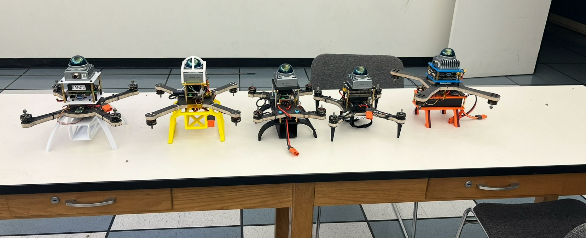
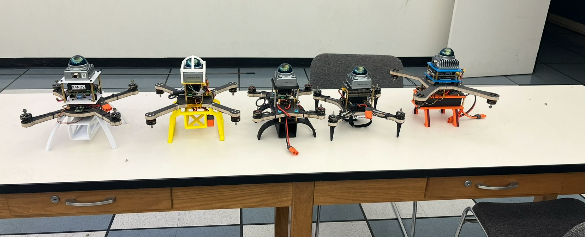

Hello, I’m Kyle Brown. I studied aerospace engineering at UCLA after completing foundational coursework at Cañada College. What excites me most is working across the full stack of aerospace projects—starting from CAD concepts, making propulsion trades with real data, and then bringing those designs to life in the shop and in testing.
I’ve spent a lot of time building and refining UAV systems: laying out avionics bays in CAD, integrating sensors like LiDAR and IMUs, and tuning flight controllers until the hardware and software feel seamless together. I’m equally comfortable designing composite structures, routing harnesses, or debugging a C++ script that isn’t quite talking to the IMU the way it should.
My technical strengths include CAD (SolidWorks), controls, propulsion sizing, and coding in C++ and MATLAB. More recently, I’ve been exploring AI/ML tools for engineering—using machine learning to spot patterns in test data, speed up analysis loops, and automate repetitive parts of trade studies.
Beyond the technical side, I bring a practical, hands-on approach. I like teams that move quickly, document clearly, and build things that actually fly. I’m detail-oriented, but I don’t get lost in perfectionism—I want to get hardware on the bench, learn from it, and iterate. That balance of precision and momentum is what motivates me as an engineer.
Outside of engineering, I’m the type of person who enjoys projects for fun—whether it’s fabricating a custom part, trying out new software tools, or digging into a research paper that sparks an idea. That curiosity keeps me learning and feeds back into my work in meaningful ways.
 
